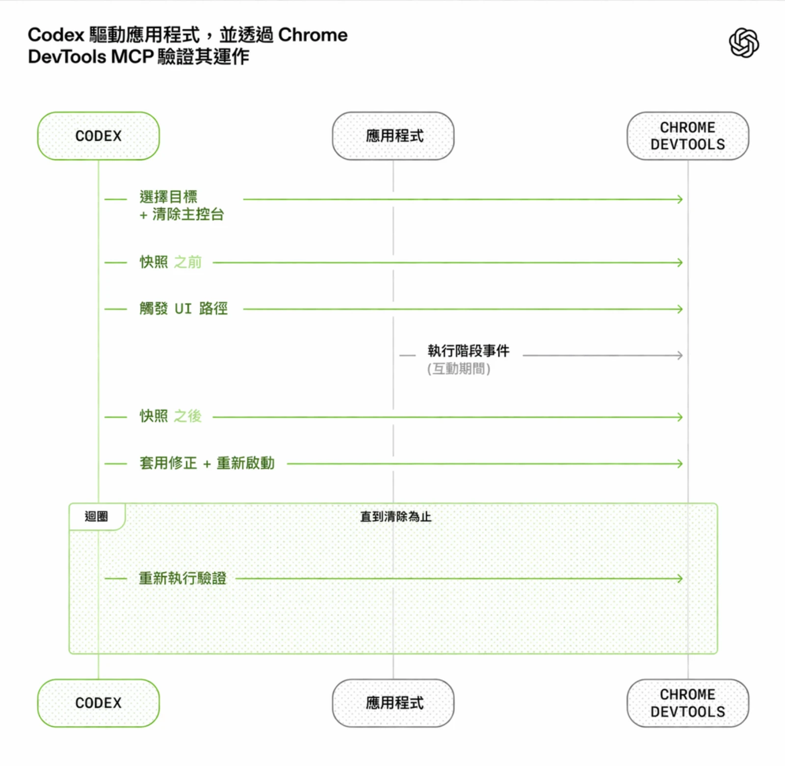
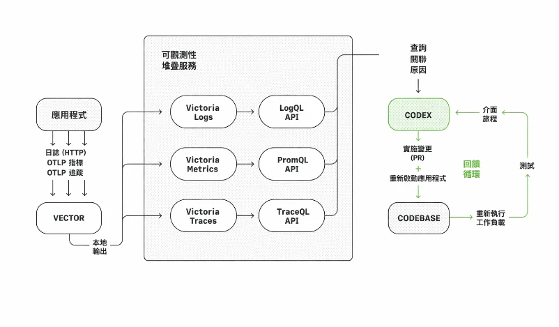
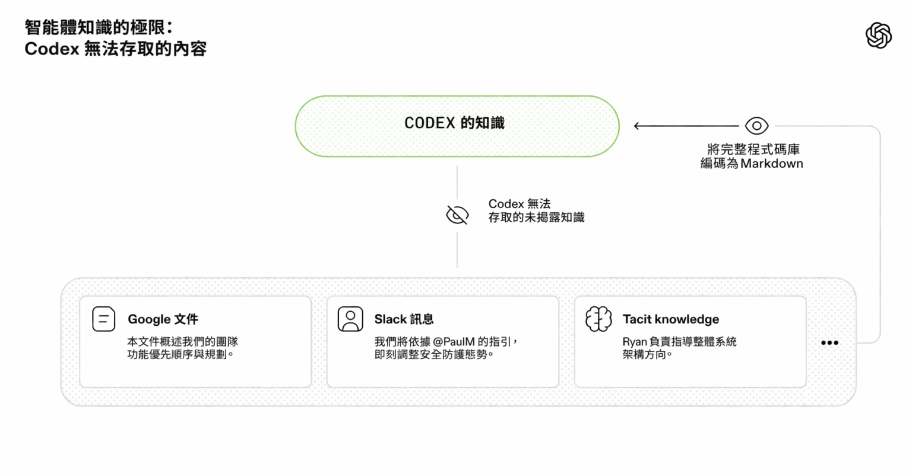
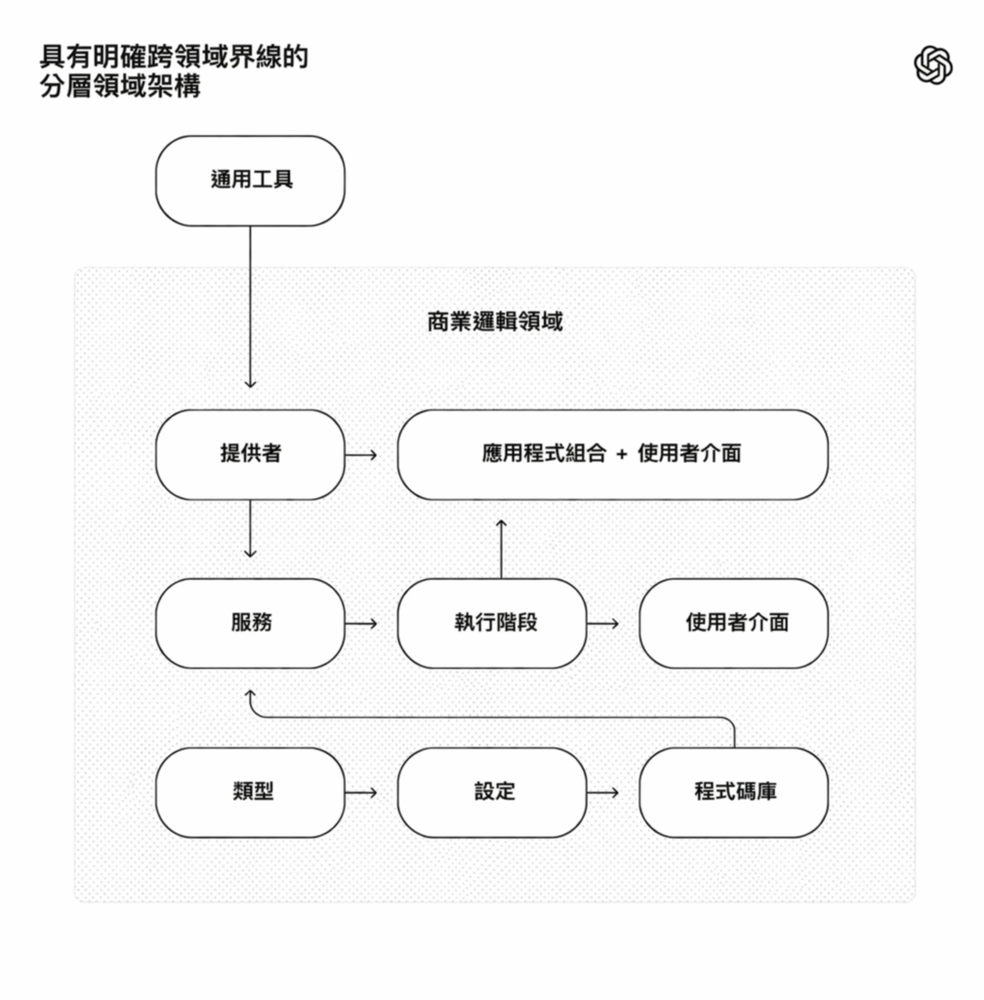

在過去五個月中，我們的團隊一直在進行一項實驗：開發並發布一款內部 Beta 版的軟體產品，完全沒有手動撰寫的程式碼。
本產品有內部每日使用者和外部 alpha 測試人員。它會推出、部署、出錯，然後修復。不同之處在於，每一行程式碼：應用程式邏輯、測試、CI 設定、文件、可觀測性（observability）和內部工具，都是由 Codex 撰寫。我們估計，完成這項工作所需的時間，約為手動撰寫程式碼的十分之一。
人類掌舵。代理執行。
我們刻意選擇這項限制，讓自己建造出提升工程速度數個數量級所需的工具。我們只有幾週時間，要交付一個最後達到一百萬行程式碼的產品。為此，我們需要了解：當軟體工程團隊的主要工作不再是撰寫程式碼，而是設計環境、明確定義意圖，並建立讓 Codex 代理可靠工作的回饋迴路（feedback loop）時，情況會怎麼改變。
這篇文章談的是我們和一個代理團隊合作開發全新產品時學到的事：哪些地方出問題、哪些問題彼此累積，以及如何最大化我們唯一真正稀缺的資源：人類的時間和注意力。
我們從一個空的 Git 程式碼庫（codebase）開始
第一次提交到空的程式碼庫（codebase）是在 2025 年 8 月下旬完成的。
初始架構，包括程式碼庫（codebase）結構、CI 設定、格式化規則、套件管理器設定和應用程式框架，是由 Codex CLI 使用 GPT‑5 生成，並由一小組現有範本指導。甚至最初用來指導代理在程式碼庫（codebase）中工作的 AGENTS.md 檔案，也是由 Codex 撰寫的。
沒有任何現有的人類撰寫程式碼可作為系統的基礎。從一開始，程式碼庫（codebase）就是由代理（agent）塑造的。
五個月後，程式碼庫（codebase）大約包含一百萬行程式碼，涵蓋應用程式邏輯、基礎設施、工具、文件和內部開發人員工具。在那段期間，大約有 1,500 個 pull request 被開啟並合併，而推動 Codex 的小型團隊僅有三位工程師。這相當於每位工程師每天平均吞吐量為 3.5 個 PR，而且令人驚訝的是，隨著團隊成長到如今七位工程師，吞吐量反而增加了。重要的是，這並非為了輸出而輸出：該產品已在內部被數百位用戶使用，其中包括每日使用的內部重度用戶。
在整個開發過程中，人類從未直接撰寫任何程式碼。這成為團隊的核心理念：不手動撰寫程式碼。
重新定義工程師角色（Redefining the role of the engineer）
缺乏親自動手的人類編碼引入了另一種工程工作，專注於系統、支架和槓桿效益（leverage）。
早期的進展比我們預期的更慢，並不是因為 Codex 無法勝任，而是因為環境的規格不夠明確。代理（agent）缺乏朝高層次目標邁進所需的工具、抽象概念和內部結構。我們工程團隊的主要工作變成了讓代理（agent）能夠執行有用的任務。
在實務上，這意味著採用深度優先的方式：將較大的目標拆解為較小的基礎模組（設計、程式碼、審查、測試等），提示代理（agent）建構這些模組，並用它們來解鎖更複雜的任務。當某件事情失敗時，解決方法幾乎從來不是「再努力一點」。因為取得進展的唯一方法是讓 Codex 來完成工作，人類工程師總是會介入並問：「缺少什麼能力？我們如何讓它對代理（agent）既清晰可讀又可強制執行？」
人類幾乎完全透過提示詞與系統互動：工程師描述一項任務，執行代理（agent），並允許它開啟 pull request。為了完成 PR，我們指示 Codex 在本地審查自己的變更，並在本地和雲端請求其他特定代理（agent）進行額外審查，回應任何人或代理（agent）提供的反饋，並在迴圈中反覆進行，直到所有代理（agent）審查員都滿意為止（這實際上是一個 Ralph Wiggum Loop(在新視窗中開啟)）。Codex 直接使用我們的標準開發工具（gh、本機腳本，以及內嵌於程式碼庫（codebase）的技能）來蒐集脈絡（context），而不需要人類將內容複製貼上到 CLI。
人類可能會審閱 pull request，但並非必須。隨著時間的推移，我們已將幾乎所有的審查工作轉向由代理（agent）之間處理。
提高應用程式的可讀性（Increasing application legibility）
隨著程式碼吞吐量增加，我們的瓶頸變成了人力 QA 能力。因為固定的限制是人類的時間與注意力，我們致力於讓應用程式的 UI、日誌和應用程式指標等內容能直接被 Codex 理解，藉此讓代理（agent）具備更多能力。
例如，我們讓應用程式可依 git worktree 開機，讓 Codex 能針對每個變更啟動並驅動一個執行個體。我們也將 Chrome DevTools 協定接入代理（agent）執行階段，並建立了用於處理 DOM 快照、螢幕截圖與導航的技能。這使 Codex 能夠重現錯誤、驗證修正，並直接推理 UI 行為。

我們也對觀察性工具做了同樣的事情。日誌、指標和追蹤資料會透過本地的可觀察性堆疊暴露給 Codex，而該堆疊對於任何特定的工作樹都是暫時的。Codex 會在該應用程式的完全隔離版本上運作，包括其日誌和指標，並會在任務完成後將其拆除。代理可以使用 LogQL 查詢日誌，並使用 PromQL 查詢指標。有了這些脈絡，像「確保服務啟動在800毫秒內完成」或「這四個關鍵使用者旅程中的任何跨度都不超過兩秒」這類提示詞就變得可行。

我們經常看到單一 Codex 執行單一任務持續超過六小時（通常是在人類睡覺時）。
我們將程式碼庫（codebase）知識設為系統的記錄依據（We made repository knowledge the system of record）
脈絡（context）管理是讓代理（agent）在大型且複雜任務中有效運作的最大挑戰之一。我們學到的最早期教訓之一很簡單：給 Codex 一張地圖，而不是一本 1,000 頁的說明手冊。
我們嘗試了「一個完整的 AGENTS.md(在新視窗中開啟)」方法。它以可預測的方式失敗：
背景資訊是一種稀缺資源。一個巨大的指令檔案擠壓了任務、程式碼和相關文件，因此代理（agent）不是漏掉關鍵限制，就是開始針對錯誤的限制進行優化。
過多的指導會變成 非指導。當一切都變得「重要」時，就沒有什麼是重要的。代理（agent）最後會在本地進行模式匹配，而不是有意識地導航。
它會即時腐爛。一本龐大的手冊會變成陳舊規則的墳墓。代理（agent）無法判斷哪些內容仍然正確，人類停止維護它，這個檔案就會悄然變成一個看似誘人卻暗藏風險的麻煩。
很難驗證。單一的大雜燴不利於進行機械式檢查（coverage, freshness, ownership, cross-links），因此漂移不可避免。
因此，我們不再將 AGENTS.md 視為百科全書，而是將它視為 目錄表。
程式碼庫（codebase）的知識庫位於結構化的 docs/ 目錄中，並視為系統的記錄依據。一份簡短的 AGENTS.md（約 100 行）會注入脈絡（context），主要充當地圖，指向其他地方更深入的真實來源。
1 AGENTS.md
2 ARCHITECTURE.md
3 docs/
4 ├── design-docs/
5 │ ├── index.md
6 │ ├── core-beliefs.md
7 │ └── ...
8 ├── exec-plans/
9 │ ├── active/
10 │ ├── completed/
11 │ └── tech-debt-tracker.md
12 ├── generated/
13 │ └── db-schema.md
14 ├── product-specs/
15 │ ├── index.md
16 │ ├── new-user-onboarding.md
17 │ └── ...
18 ├── references/
19 │ ├── design-system-reference-llms.txt
20 │ ├── nixpacks-llms.txt
21 │ ├── uv-llms.txt
22 │ └── ...
23 ├── DESIGN.md
24 ├── FRONTEND.md
25 ├── PLANS.md
26 ├── PRODUCT_SENSE.md
27 ├── QUALITY_SCORE.md
28 ├── RELIABILITY.md
29 └── SECURITY.md程式碼庫內的知識儲存版面配置。
設計文件已編目並建立索引，包含驗證狀態，以及一套定義以代理（agent）為先的運作原則的核心信念。架構文件(在新視窗中開啟)提供網域與套件分層的高層次概覽。一份品質文件會對每個產品領域和架構層級進行評分，並隨時間追蹤差距。
計劃視為一級工件。短暫的輕量計畫用於小幅變更，而複雜工作則記錄在 執行計畫(在新視窗中開啟) 中，附有進度與決策記錄，並提交到程式碼庫（codebase）。使用中的計畫、已完成的計畫，以及已知的技術債務都會進行版本控管並集中放在同一處，讓代理人無需依賴外部脈絡（context）也能運作。
這能啟用 漸進式揭露（progressive disclosure）：代理從一個小而穩定的入口點開始，並被指導接下來該往哪裡看，而不是一開始就被大量資訊淹沒。
我們會自動執行此措施。專用的 Linter 和 CI 工作會驗證知識庫是否為最新、已交叉連結，且結構正確。一個定期執行的「doc-gardening」代理（agent）會掃描過時或不再使用、未反映真實程式碼行為的文件，並開啟修正用的 pull request。
代理的可讀性是目標（Agent legibility is the goal）
隨著程式碼庫（codebase）的演進，Codex 的設計決策框架也必須隨之演進。
由於程式碼庫（codebase）完全由代理（agent）生成，因此它首先針對 Codex 的 可讀性 最佳化。就像團隊致力於提升程式碼對新進工程師的可導覽性一樣，我們的人類工程師的目標是讓代理（agent）能夠直接從程式碼庫（codebase）推理整個業務領域。
從代理（agent）的角度來看，任何它在執行時無法在脈絡（context）中存取的內容，實際上都不存在。存在於 Google Doc、對話串或人們腦中的知識無法被系統存取。本地程式碼庫（codebase）中的版本化工件（例如：程式碼、Markdown、結構描述、可執行計畫）是它所能看到的全部。

我們了解到，隨著時間的推移，我們需要將越來越多的脈絡（context）推送到儲存庫中。那次在 Slack 上讓團隊對齊架構模式的討論？如果代理（agent）無法發現它，那麼它就像三個月後加入的新進人員一樣難以辨識。
為 Codex 提供更多背景脈絡，意味著整理並揭露正確的資訊，讓代理（agent）能據此推理，而不是用臨時拼湊的指令讓它不堪負荷。就像你會為新隊友進行產品原則、工程規範與團隊文化（包括 emoji 偏好）的入職培訓一樣，提供代理（agent）這些資訊能帶來更一致的輸出。
這種框架釐清了許多取捨。我們偏好能在 repo 內完全內化並推理的相依性與抽象概念。經常被形容為「無聊」的技術，往往因為可組合性、API 穩定性，以及在訓練集中的表現，而更容易讓代理進行建模。在某些情況下，讓代理（agent）重新實作部分功能，比起為了繞過公共程式庫不透明的上游行為而採取變通作法，成本更低。例如，我們沒有引入通用的 p-limit 風格套件，而是自行實作了具備並行控制的 map 輔助工具：它與我們的 OpenTelemetry 儀表化緊密整合，具備 100% 測試覆蓋率，且行為完全符合我們的執行時環境預期。
將更多系統轉成代理（agent）能直接檢視、驗證和修改的形式，能提高槓桿效益（leverage）：不只 Codex 受益，其他參與程式碼庫（codebase）工作的代理也一樣，例如 Aardvark。
強制規範架構與品味（Enforcing architecture and taste）
僅靠文件無法維持完全由代理（agent）生成的程式碼庫（codebase）的一致性。透過強制遵守不變量（invariant），而非事無巨細地管理實作，我們讓代理（agent）能快速交付，同時不削弱基礎。例如，我們要求 Codex 在邊界處解析資料形狀(在新視窗中開啟)，但不會規定要如何做到（模型似乎偏好 Zod，但我們並未指定特定的函式庫）。
代理（agent）在具備 嚴格邊界和可預測結構(在新視窗中開啟) 的環境中最為有效，因此我們圍繞嚴謹的架構模型來建構此應用程式。每個業務領域都被劃分為一組固定的層級，並嚴格驗證依賴方向，且僅允許有限的一組可接受的邊。這些限制是透過自訂的程式碼格式檢查器（當然是由 Codex 產生的！）和結構測試以機械方式強制執行的。
下方的圖表顯示規則：在每個業務領域內（例如，應用程式設定），程式碼只能透過一組固定的層級「向前」相依（Types → Config → Repo → Service → Runtime → UI）。橫切關注點（驗證、連接器、遙測、功能旗標）會透過單一明確的介面進入：Provider。其他任何事情都不允許，並且會被機械地強制執行。

這種架構通常會等到你擁有數百名工程師時才會著手進行。對於編碼代理來說，這是一個早期的先決條件：限制條件是讓速度在不衰退或架構漂移的情況下得以實現的關鍵。
在實務上，我們透過自訂的程式碼檢查工具與結構測試來執行這些規則，並搭配一小組「品味不變量（invariant）」。例如，我們透過自訂 lint 靜態強制執行結構化記錄、結構描述和類型的命名慣例、檔案大小限制，以及平台特定的可靠性要求。因為這些 lint 是自訂的，我們撰寫錯誤訊息以將修復指示注入代理（agent）的情境中。
在以人為本的工作流程中，這些規則可能會讓人覺得繁瑣或受限。有了代理，它們就成為倍增器：一旦完成編碼，便能同時套用到所有地方。
同時，我們明確指出哪些限制條件重要，哪些則不重要。這就像領導一個大型工程平台組織：集中管理邊界，並在本地賦予自主權。你非常重視界線、正確性與可重現性。在這些界線內，你允許團隊或代理在解決方案的呈現方式上擁有相當大的自由。
生成的程式碼不總是符合人類的風格偏好，但這沒關係。只要輸出正確、可維護，且未來的代理（agent）執行也能清楚理解，就符合標準。
人類的品味會不斷地回饋到系統中。審查意見、重構的 pull request，以及使用者端的錯誤，會作為文件更新記錄下來，或直接編碼到工具中。當文件說明不足時，我們會將規則納入程式碼中
吞吐量改變合併哲學（Throughput changes the merge philosophy）
隨著 Codex 的吞吐量增加，許多傳統的工程規範變得不再有效。
該程式碼庫（codebase）以最少的阻擋式合併閘門運作。pull request 的生命週期很短。測試不穩定通常會透過後續重跑來處理，而非無限期阻礙進度。在一個代理（agent）吞吐量遠遠超過人類注意力的系統中，修正很便宜，而等待很昂貴。
在低吞吐量的環境中，這樣做是不負責任的。在這裡，這通常是正確的取捨。
「代理生成」究竟是什麼意思（What “agent-generated” actually means）
當我們說程式碼庫（codebase）是由 Codex 代理（agent）產生時，我們指的是整個程式碼庫（codebase）的所有內容。
代理生成：
產品代碼與測試
CI 設定與發行工具
內部開發者工具
文件與設計歷史
評估工具
查看評論和回覆
管理程式碼庫（codebase）本身的腳本
生產儀表板定義檔案
人類始終參與其中，但工作的抽象層次和以往不同。我們優先處理工作，將使用者回饋轉成驗收標準，並驗證結果。代理（agent）遇到困難時，我們把它視為訊號：找出缺少的內容，例如工具、護欄（guardrails）和文件，再把這些內容回饋到程式碼庫（codebase）中，而且一律由 Codex 自行撰寫修正。
代理人直接使用我們的標準開發工具。他們會拉取審閱回饋、直接在行內回覆、推送更新，並且經常自行壓縮並合併自己的 pull request。
自主性水平提升（Increasing levels of autonomy）
隨著測試、驗證、審查、回饋處理與復原等更多開發循環直接寫入系統，這個程式碼庫（codebase）最近跨過了一個重要門檻，讓 Codex 能夠端對端推動一項新功能。
只需提供一個提示詞，代理（agent）現在可以：
- 驗證目前程式碼庫（codebase）的狀態
- 重現已報告的錯誤
- 錄製一段影片展示故障情況
- 執行修正
- 操作應用程式，驗證修正結果
- 錄製第二段影片，展示問題已解決
- 開啟 pull request
- 回應代理（agent）和人類的回饋
- 偵測並修正建置失敗
- 只在需要判斷時升級給人工
- 合併更改
這種做法高度取決於這個程式碼庫（codebase）的結構和工具。除非投入相近的心力，否則不該假設它能普遍適用，至少目前還不能。
熵與垃圾回收（Entropy and garbage collection）
完整的代理（agent）自主性也引入了新的問題。 Codex 會複製程式碼庫（codebase）中已存在的模式，即使是不一致或不理想的模式。隨著時間推移，這不可避免地會導致偏移。
最初，人類手動處理這個問題。我們的團隊過去每週五（佔一週的 20%）都在清理「AI 殘渣」。不出所料，那並沒有擴展起來。
相反地，我們開始將我們所稱的「黃金原則」直接編碼到程式碼庫（codebase）中，並建立定期的清理流程。這些原則是具主觀性的機械規則，能在未來的代理（agent）運行中維持程式碼庫（codebase）的可讀性和一致性。例如：(1) 我們偏好共用的公用程式套件，而不是手寫的輔助工具，以便集中管理不變條件；(2) 我們不會用「YOLO 風格」探測資料，而是驗證邊界或依賴具型別的 SDK，避免代理（agent）建立在猜測的資料形狀上。我們會定期執行一組背景 Codex 任務，掃描偏差、更新品質等級，並開啟具針對性的重構 Pull Request。大多數變更不到一分鐘就能完成審閱並自動合併。
這個功能就像垃圾回收。技術債像一筆高利率貸款：幾乎總是持續小額償還，比放任它複利累積後再痛苦地分段處理更好。人類的品味一旦捕捉，就會持續套用到每一行程式碼。這讓我們每天都能捕捉並解決不良模式，而不是讓它們在程式碼庫（codebase）中擴散數天或數週。
我們仍在學習的內容（What we are still learning）
到目前為止，這項策略在 OpenAI 的內部上線和採用方面運作良好。為真實使用者打造實際產品，有助於讓我們的投資立足於現實，並引導我們邁向長期可維護性。
我們還不清楚，在完全由代理（agent）生成的系統中，架構一致性多年後會如何演化。我們仍在學習人類判斷在哪些地方能帶來最大的槓桿效益（leverage），以及如何把這種判斷編碼，讓它持續發揮作用。我們也不知道，模型能力隨時間提升後，這個系統會如何演變。
現在很明顯：開發軟體仍然需要紀律，但這種紀律更多體現在框架上，而不是程式碼。要讓程式碼庫（codebase）保持連貫，工具、抽象層和回饋迴路（feedback loop）會越來越重要。
我們目前最棘手的挑戰集中在設計環境、回饋迴路（feedback loop）和控制系統，協助代理達成我們的目標：大規模建置並維護複雜且可靠的軟體。
隨著 Codex 這類代理（agent）在軟體生命週期中承擔更多工作，這些問題會變得更重要。我們希望分享這些早期經驗，幫助你思考該把心力投入在哪裡，讓你可以開始建構事物。
作者（Author）
Ryan Lopopolo
致謝（Acknowledgements）
特別感謝 Victor Zhu、Zach Brock，以及打造這款新產品的整個團隊對本文的貢獻。